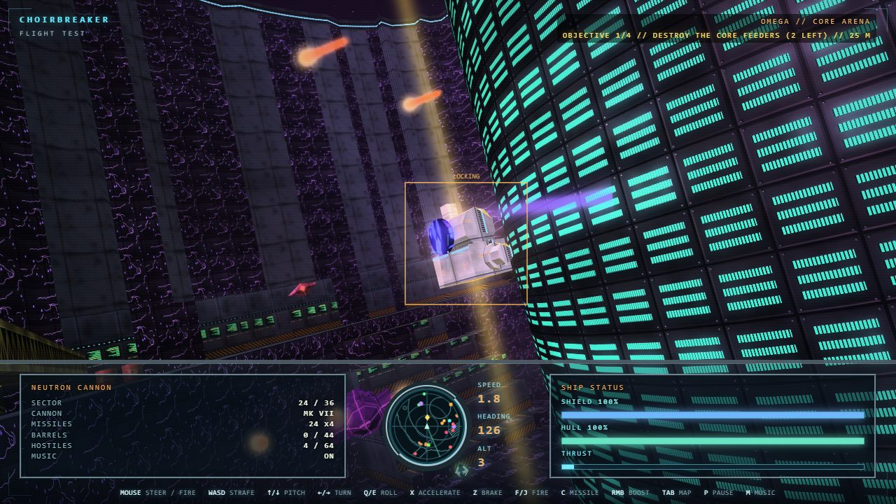
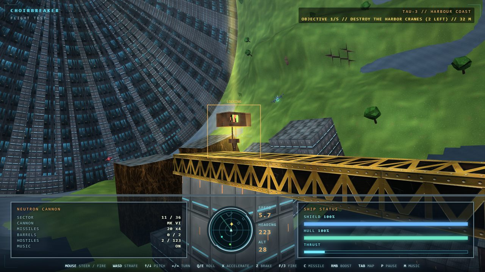
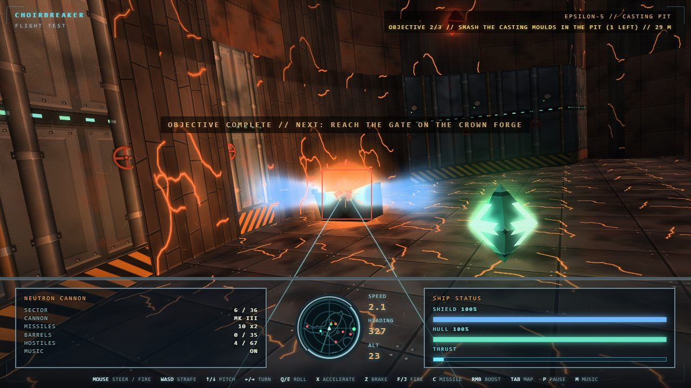
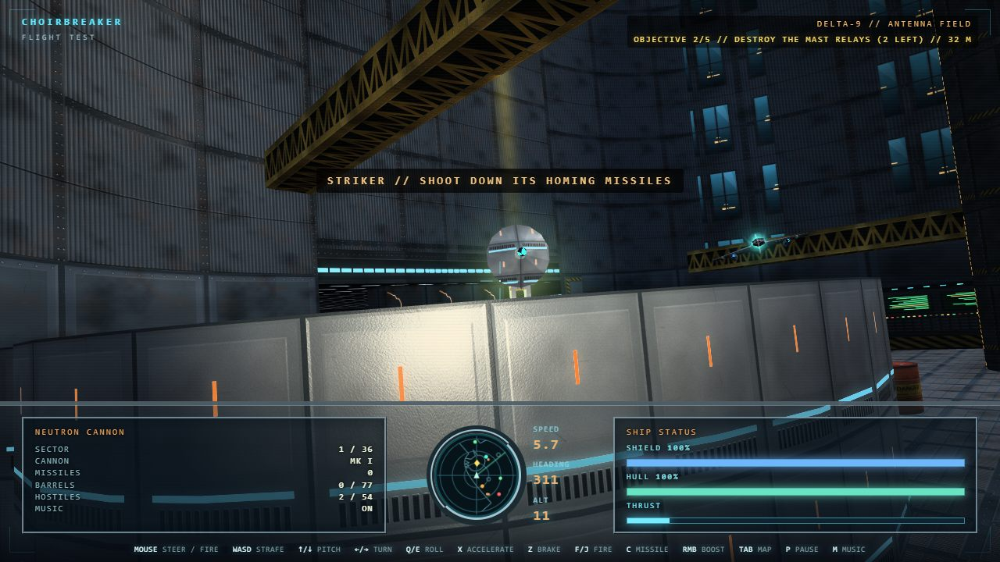

The Silence
For one night every radio telescope on Earth heard the same chord of eleven tones. Astronomers called it the Choir. Nine days later the swarm came, and Earth went quiet. Forty thousand survivors are left on frozen outposts, listening for the chord every night. You fly the Dissonance, the one note in their song that doesn't belong.
What you fly into




The game
Turn, roll, strafe and dive in any direction through stations, gorges, flooded docks and spinning drum worlds.
Three episodes, each sector with its own objectives, music, sky and secrets.
Every episode ends on a boss, with more waiting along the way.
Seven cannon tiers, salvo launchers, seeker missiles and an upgrade bay between sectors.
Three episodes
Delta-9, Epsilon-5 and the storm seas of Tau-3, down to the Hive Queen's nest.
SECTORS 1-4 FREEThe crown worlds that circle Omega, where the swarm is built.
The hidden worlds inside the dust shroud, and the voice that called the swarm to Earth.
Play
- Sectors 1-4 of Episode I
- Plays in the browser right now
- Your progress carries over when you buy
- All 36 sectors and three episodes
- Every boss
- One-time purchase, no ads
- A download that plays offline in any browser
The full game is sold on itch.io. To keep your demo progress, press Esc in the demo, copy your save code, and load it in the full game.